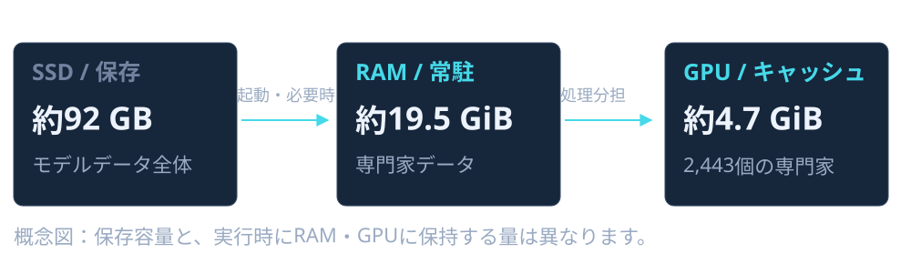
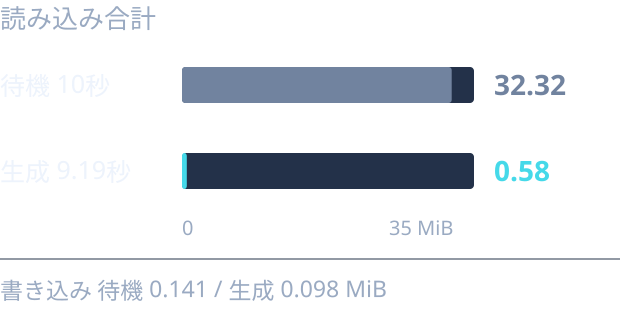

35.9 tokens/s
元の設定から約8.8%改善01 / OVERVIEW
このPCで、
Strataはどこまでできる？
導入から開発テストまで。速さだけでなく、正しく動くコードを作れるかと、SSDへの負荷を実際に確認しました。
今回の結論
小さなPythonツールの補助には有望。
複数ファイルの開発では、人間の診断と細かなテストが必要でした。
16 / 16
CSVツール · 最終テスト合格10 / 13
具体的なヒントあり · 未完成0.58 MiB
256トークンを生成した約9.2秒間数字はそれぞれ異なるテストの結果です。生成速度は英語・思考オフ・同じ質問の繰り返し時。SSD量はG:全体で、他のアプリも含みます。
02 / ENVIRONMENT
動かしているモデルとPC
使用モデル
Qwen3.8-Flash-Next Coder IQ1_M
コード向けモデルをIQ1_Mで量子化し、必要なメモリー量を抑えています。日本語の回答には繰り返しも見られました。
PCの構成
- GPU
- Radeon RX 9070 XT 16 GB VRAM
- CPU
- Ryzen 7 5700X 8コア / 16スレッド
- RAM
- 32 GB
- 保存先
- G: のNVMe SSD SHGP31-1000GM / 1 TB
- OS / エンジン
- Windows 11 / Strata 0.1.38 AMD HIP
維持している設定
- 最大会話長
- 65,536トークン 64Kを維持
- 会話キャッシュ
- 8ビット（int8）
- CPUの並列数
- 7
- GPUへの振り分け
- 0.65 PCIe経由の処理分担
- 画像 / 実験的投影
- オフ / オフ

03 / PERFORMANCE
64Kを保って、処理分担を調整
CPUを多く並列に動かすより、7並列のままGPUの担当を増やす方が速い結果になりました。最速の候補は再起動後にも測り直しました。
設定ごとの生成速度

最終設定での3回の測定
| 回 | 返答開始 | 生成速度 | 全体 |
|---|---|---|---|
| 1回目 | 2.94秒 | 22.3 t/s | 14.34秒 |
| 2回目 | 0.22秒 | 36.2 t/s | 7.25秒 |
| 3回目 | 0.24秒 | 35.5 t/s | 7.40秒 |
繰り返しの速さ ≠ 毎回の速さ
同じ質問では入力やモデルのキャッシュが効きます。別の質問や長い入力では、待ち時間も生成速度も変わります。
実行時のRAM確保量も変わったため、改善のすべてが振り分け設定だけの効果とは断定できません。
実際のMonitor画面と、日本語での初回測定を見る

日本語の質問でも3回測定
「PythonでCSVを読み込み、列ごとの平均を計算する関数を書いて」
- 生成速度：11.2 → 23.7 → 26.2 t/s
- 返答開始：約5.3 → 0.7 → 0.4秒
- 全体：28.0 → 11.3 → 10.0秒
最適化前の別テストです。temperature 0.6、思考オフ、256トークン。英語の最適化テストと直接比較はできません。返答開始は0.1秒間隔の概算。画像をクリックすると全体を確認できます。
04 / CODING
簡単な課題では成功。難しくすると限界も。
実装はStrataが生成。こちらで先に用意したテストを実行し、失敗したらログを渡しました。生成コードの直接手直しはしていません。
完成
CSV集計ツール
作成 → 列指定・JSON出力 → NaNやBOMの修正
16 / 16 合格
STEP 01
新規作成
平均計算、空欄・文字列の除外、負数、小数、日本語列名。
6/6 合格 約50秒STEP 02
機能追加
列指定、JSON出力、コマンド操作、エラー処理。
12/12 合格 約24秒STEP 03
バグ修正
NaN・無限大、BOM付きCSV。既存機能も確認。
16/16 合格 約25秒コードの手直し 0回 / 各段階の追加修正依頼 0回
修正前は追加テスト3件が失敗。仕様と失敗ログを渡すと、最初の回答で修正できました。生成時間は合計約99秒で、測定側の準備・修正時間は含みません。
未完成
SQLiteタスク管理CLI
保存処理・入力検証・CLIを分けた3ファイル構成。
10 / 13 合格
つまずいた点
CLIがオプションを受け取れず、SQLiteの追加SQLにも構文ミス。失敗ログだけでは直せませんでした。
ヒントで改善した点と、残った不具合
追加・一覧・検索は成功。ただし完了処理のSQLに別の構文ミスが残り、関連3件が失敗しました。
28件すべてを評価したわけではありません。
基本機能13件の合格数です。JSON入出力や一括取り消し等の後続15件は、基本機能が完成せず未評価。生成4回の合計は約169秒でした。
いずれも英語・思考オフ。ファイル保存とテスト実行はCodexが仲介した評価で、Strata単体の自律エージェントとしての評価ではありません。
05 / STORAGE
今のSSD負荷は、どれくらい？
初回はRAM確保に失敗し、SSDから読む状態でした。再起動後は約19.5 GiBをRAMに保持でき、今回の短い回答中はSSDを大量に読み続けてはいませんでした。
G:のSSDに発生した通信量

256トークン生成中の数値
- 処理時間
- 9.19秒
- 読み込み / 書き込み
- 0.578 / 0.098 MiB
- 読み込み平均 / ピーク
- 0.063 / 0.413 MiB/秒
- モデルの専門家データ
- ファイル読み込み 0回 このリクエストのエンジン統計
- モデルデータの保存容量
- 約92 GB 1回の処理量とは別
「ログの数十GB read」と「実際のSSD通信」は別の数字
ファイルへの読み込み要求は、OSのメモリー上のキャッシュで処理されることもあります。今回のSSD測定はWindowsのディスクデバイスのカウンター。MonitorのDisk readも、PC全体の値でモデル専用ではありません。
0.5秒間隔で測定。1 MiB = 1,048,576バイト。起動時、長文、メモリー不足時は増える可能性があります。SSD内部のNAND書き込み量や寿命を測定したものではありません。
06 / TAKEAWAYS
この環境での、現実的な使い方
小さく任せる
関数や小規模CLIなど、仕様が明確な作業から。今回のCSVツールでは手直しなしで完成しました。
テストを先に用意する
動く見た目だけで判断しない。数値、保存、入力エラー、変更後の既存機能を確認します。
複雑な変更は分ける
DB・CLI・入出力を一度に任せず、段階ごとに検証。失敗ログだけで直らない場合は原因を説明します。
まだ確認していないこと
思考ありとの比較、64Kを埋める長文、大規模なコードベース、外部ライブラリー、完全自律のファイル編集。今回の結果を、これらの性能まで広げて判断しないことが大切です。